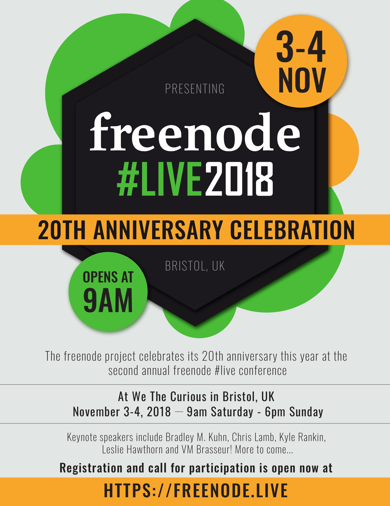

This article is a gentle introduction to the Clojure Functional Programming language that is based on LISP, uses the Java JVM and has a handy REPL. And, as Clojure is based on LISP, be prepared to see lots of parentheses!
You can install Clojure on a Debian Linux machine by executing the following command as root or using sudo:
# apt-get install clojure
Finding the version of Clojure you are using is as simple as executing one of the following commands inside the Clojure REPL, which you can enter by running clojure:
# clojure
Clojure 1.8.0
user=> *clojure-version*
{:major 1, :minor 8, :incremental 0, :qualifier nil}
user=> (clojure-version)
"1.8.0"
user=> (println *clojure-version*)
{:major 1, :minor 8, :incremental 0, :qualifier nil}
nil
The first command gets you into the Clojure REPL, which displays the user=> prompt and waits for user input. The remaining three commands that should be executed within the Clojure REPL will generate the same output, which, in this example, shows that Clojure version 1.8.0 is being used. So, if you're following along, congratulations! You have just run your first Clojure code!
The first thing you should do after getting Clojure is to install a very handy utility named leiningen, which is the easiest way to use and manage Clojure projects on your Linux machine. Follow the instructions at leiningen.org or use your favourite package manager to install leiningen on your Linux machine. Additionally, if you are using Clojure all the time and working with large Clojure projects, tools like Jenkins and Semaphore will automate your build and test phases and save you lots of time.
After installing leiningen, use the lein command (which is the name of the executable file for the leiningen package) to create a new project named hw:
$ lein new hw
Generating a project called hw based on the 'default' template.
The default template is intended for library projects,
not applications. To see other templates (app, plugin, etc),
try `lein help new`.
The preceding command will create a new directory named hw that will contain files and other directories. You'll need to make some changes to some of the project files in order to execute the project. First, you'll need to edit the project.clj that can be found inside the hw directory and make it as follows:
$ cat project.clj
(defproject hw "0.1.0-SNAPSHOT"
:main hw.core
:dependencies [[org.clojure/clojure "1.8.0"]])
Then, edit the ./src/hw/core.clj file so it looks like this:
$ cat src/hw/core.clj
(ns hw.core)
(defn -main [& args]
(println "Hello World!"))
The ./src/hw/core.clj file is where you can find the Clojure code. Executing the preceding project is as simple as running the lein run command inside the directory of the project:
$ lein run
Hello World!
The first time you execute lein run, lein might automatically download some files that are required for building the project. Additionally, keep in mind that lein can do many more things than what I describe here. The next most important lein commands are lein clean, which cleans up a Clojure project, and lein repl, which starts the Clojure console.
Clojure's philosophy is based on Lisp, which means that Clojure code contains lots of parentheses. Additionally, Clojure is a functional and dynamically typed programming language that has support for concurrent programming, which means Clojure's functions (try to) have no side effects. As the implementation of Clojure is based on the Java Virtual Machine, Clojure data types are Java data types, which means that all Clojure values are in reality references to Java classes. Moreover, most Clojure data types are immutable, which means they can't be changed after they've been created. Finally, Clojure has an unusual way of checking for equality. In order to find out whether two lists are the same, Clojure checks the actual values of the two lists. Most programming languages don't do that because it might be a slow process, especially when dealing with large lists. Nevertheless, Clojure avoids that risk by keeping a hash for each one of its objects and by comparing the hashes of two objects instead of actually visiting all their values. This works as long as the objects are immutable, because if objects are mutable and one of the objects changes, its hash table won't be updated to reflect that change.
In summary, Clojure supports numbers, booleans, characters, strings, nil values, function variables, namespaces, symbols, collections, keywords and vars. A var is one of the mutable Clojure types. A collection can be a list, a hashmap, a vector or a sequence, but lists and hashmaps are the most popular Clojure data types.
But, that's enough of a Clojure introduction; let's start writing real Clojure code.
First, let's look at how to define and populate variables in Clojure as well as how to visit all the elements of a list using the Clojure shell. The Clojure syntax requires that you put the operators as well as the functions in a prefix way, which means that operators are placed before their arguments and not between the arguments (infix). Putting it simply, to calculate the sum of 9 and 4, you would write + 9 4 and not 9 + 4.
Interaction with the Clojure shell starts like this:
user=> (- 10)
-10
user=> (- 10 10)
0
user=> (- 10 (+ 5 5) )
0
user=> (/ 10 (+ 5 5) )
1
user=> (println "Hello\nLinux Journal!")
Hello
Linux Journal!
nil
user=> (str "w12")
"w12"
This Clojure code does some basic things with numbers first and then with strings. In the first statement, you can see that everything in Clojure must be put in parentheses. The third numeric operation is equivalent to 10 - (5 + 5), which equals zero; whereas the fourth numeric operation is equivalent to 10 / (5 + 5), which equals 1. As you already saw in the Hello World program, the println function is used for printing data on the screen; whereas the str function can help you convert anything, including numbers, into a string. A good bonus of str is that you can use it for concatenating strings when it's called with multiple arguments.
The next interaction verifies that characters in Clojure, which are written as \a, \b and so on, are not equivalent to Clojure strings, which use double quotes, with a length of 1. However, when you process a single character with str, you get a string:
user=> (= \a "a")
false
user=> (= (str \a) "a")
true
And now, get ready for something more advanced:
user=> (map (fn [x] (.toUpperCase x)) (.split
↪"Hello Linux Journal!" " "))
("HELLO" "LINUX" "JOURNAL!")
The preceding Clojure code does many things. It splits its input string into words and converts each word to uppercase—the good thing is that the way this statement is written in Clojure is natural and easy to read—as long as you start reading it from the right to the left.
The following interaction with the Clojure shell shows how you can work with Clojure maps, which (as you might expect) associate keys with values:
user=> (def myMap {:name "Mihalis"
:surname "Tsoukalos"
:livesAt {:country "Greece"
:city "Athens" } } )
#'user/myMap
First, you create a new map and assign it to a variable named myMap. Notice that myMap contains a nested value—that is, a map within a map.
In the next interaction, you'll see various ways to get data from the previous map:
user=> (get myMap :country)
nil
user=> (get myMap :name)
"Mihalis"
user=> (myMap :name)
"Mihalis"
user=> (:name myMap)
"Mihalis"
user=> (get myMap :surname)
"Tsoukalos"
user=> (get-in myMap [:livesAt :country])
"Greece"
user=> (get-in myMap [:livesAt :city])
"Athens"
user=> (get-in myMap [:livesAt :wrong])
nil
So, you can get the value of a key using the get keyword, and you can travel inside nested values with the get-in keyword. Moreover, there are two additional ways to get the value of a key without needing to use the get keyword, which are illustrated in the second and the third commands.
Additionally, if a key does not exist, you'll get a nil value. Finally, here's how to iterate over all the elements of a list:
user=> (def myList (list 0 1 2 3 4 5))
#'user/myList
user=> (doseq [[value index] (map vector myList (range))]
(println index ": " value))
0 : 0
1 : 1
2 : 2
3 : 3
4 : 4
5 : 5
nil
So, first you store a list with numbers to the myList variable, and then you use doseq to iterate over the elements of the list.
This section shows how to define a function in Clojure that calculates natural numbers that belong to the Fibonacci sequence. Create the Clojure project for calculating numbers of the Fibonacci sequence like this:
$ lein new fibo
$ cd fibo
$ vi src/fibo/core.clj
$ vi project.clj
The contents of src/fibo/core.clj should be this:
$ cat src/fibo/core.clj
(ns fibo.core)
(def fib
(->> [0 1]
(iterate (fn [[a b]] [b (+ a b)]))
(map first)))
(defn -main [& args]
(println "Printing Fibonacci numbers!"))
(println (nth fib 10))
(println (take 15 fib))
In the aforementioned code, the definition of the fib function is responsible for calculating the numbers of the Fibonacci sequence. After that, the main function uses fib two times. The first time is to get a specific Fibonacci number, and the second time is to get a list with the first 15 Fibonacci numbers.
Executing the fibo project generates output like the following:
$ lein run
55
(0 1 1 2 3 5 8 13 21 34 55 89 144 233 377)
Printing Fibonacci numbers!
When you start feeling comfortable with Clojure, try implementing the fib function differently because there are many more ways to calculate Fibonacci numbers in Clojure.
Now, let's look at how to use the command-line arguments of a program in Clojure using a lein project. The steps for creating the "cla" project are as follows:
$ lein new cla
$ cd cla
First, you should edit src/cla/core.clj to include the actual Clojure code that deals with the command-line arguments of the program. After that, you edit project.clj, and you are done. You can find the Clojure code that actually works with the command-line arguments of the program in the main function that is defined inside src/cla/core.clj:
(defn -main [& args] ; Get command line arguments
(if-not (empty? args)
(doseq [arg args]
(println arg))
; In case there are no command line arguments
(throw (Exception. "Need at least one
↪command line argument!"))))
The previous Clojure code iterates over the items of the args variable using doseq and prints each one of its items. Additionally, the last line of code illustrates how to handle exceptions in Clojure. You need that line because doseq won't run if the args list is empty, which will happen when a program is executed without any command-line arguments. Finally, you can see that comments in Clojure are lines that begin with a semicolon or the part of the line after a semicolon character.
Executing the Clojure project generates output like the following:
$ lein run one 2 three -5
one
2
three
-5
As you can see, the way to give command-line arguments to a Clojure project is the same as in most programming languages. Note that if you execute lein run without giving any command-line arguments, the program will panic and produce lots of debugging output, including the following message:
$ lein run
Exception in thread "main" java.lang.Exception: Need at least
one command line argument!,
Apart from using the command line-arguments of a program, there is an alternative way for getting user input, which is during the execution of the program. Here's how to get input from the user in the Clojure shell using the read-line function:
user=> (def userInput (read-line))
Hello there!
#'user/userInput
user=> (println userInput)
Hello there!
nil
The first command uses the read-line function to read a line from the user and assigns that line to a new variable named userInput; whereas the second command prints the value of the userInput variable.
Macro definitions look like function definitions, as they have a name, a list of arguments and a body with the Clojure code, and they allow the Clojure compiler to be extended using user code. Generally speaking, there are three circumstances when you need to use macros in Clojure: when you want to execute code at compile time, when you want to use inline code and when you need to access un-evaluated arguments. However, as macros are available only at compile time, it's better to use functions instead of macros when possible.
Next, here's how to copy a file in Clojure, in case you want to evaluate whether Clojure can be used as a systems programming language like C and Go. As you might expect, you'll use the lein utility for generating the project:
$ lein new copy
$ cd copy/
$ vi project.clj
$ vi src/copy/core.clj
The last two commands signify that you need to change the project.clj and src/copy/core.clj files.
You can find this project's logic in the implementation of the main() function:
(defn -main [& args]
(let [input (clojure.java.io/file "/tmp/aFile.txt")
output (clojure.java.io/file "/tmp/aCopy.txt")]
(try
(= nil (clojure.java.io/copy input output))
(catch Exception e (str "exception: "
↪(.getMessage e))))) )
As it happens with most programming languages, you can use many techniques in order to copy a file. This example uses the simplest method for copying a file with a single function call. Other techniques include reading the input file all at once and writing it to the output file the same way, and reading the input file line by line and writing to the output file line by line. For reasons of simplicity, the input and output filenames are hard-coded in the project files and are assigned to two variables named input and output, respectively. After that, a call to clojure.java.io/copy creates a copy of the input file. Although this method doesn't require many lines of code, it might not be very efficient when you want to copy huge files or when you want to be able to change some of the parameters of the process.
Executing the project generates no output, but the desired copy of the input file will be created:
$ ls -l /tmp/aFile.txt /tmp/aCopy.txt
ls: /tmp/aCopy.txt: No such file or directory
-rw-r--r-- 1 mtsouk wheel 14 Jun 28 10:32 /tmp/aFile.txt
$ lein run
$ ls -l /tmp/aFile.txt /tmp/aCopy.txt
-rw-r--r-- 1 mtsouk wheel 14 Jun 28 10:49 /tmp/aCopy.txt
-rw-r--r-- 1 mtsouk wheel 14 Jun 28 10:32 /tmp/aFile.txt
If you want to make your code more robust, you might want to use a (.exists (io/file "aFile.txt")) statement to check whether your input file does exist before trying to copy it and a (.isDirectory (io/file "/a/path/to/somewhere")) statement to make sure that neither your input file nor your output file are directories.
Finally, let's look at how to visit the files and directories that reside in a given directory. You can create the lein project as follows:
$ lein new list
$ cd list
As expected, you'll need to edit two files from your new project: project.clj and src/list/core.clj. You can find the program's logic in the Clojure code of the listFileDir function that is defined in src/list/core.clj:
(defn listFileDir [d]
(println "Files in " (.getName d))
(doseq [f (.listFiles d)]
(if (.isDirectory f)
(print "* ")
(print "- "))
(println (.getName f))))
Running your lein project generates output like this:
$ lein run
Files in .
- project.clj
- LICENSE
* test
- CHANGELOG.md
* target
- .hgignore
* resources
- README.md
- .gitignore
* doc
* src
This article introduces Clojure, which is a very interesting functional programming language with many fans. The tricky thing is that you need to get used to Clojure by writing small Clojure programs in order to realize its advantages.
Mihalis Tsoukalos is a technical author, a UNIX administrator and developer and a mathematician. He is the author of Go Systems Programming and Mastering Go. You can reach him at http://www.mtsoukalos.eu/ and @mactsouk.
